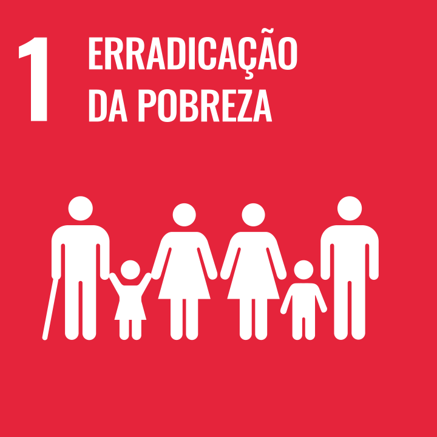

Objetivo de Desenvolvimento Sustentável 1
Erradicação da Pobreza
Objetivo 1: Acabar com a pobreza em todas as suas formas, em todos os lugares
1.1:
Até 2030, erradicar a pobreza extrema para todas as pessoas em todos os lugares, atualmente medida como pessoas vivendo com menos de US$ 1,90 por dia
1.2
Até 2030, reduzir pelo menos à metade a proporção de homens, mulheres e crianças, de todas as idades, que vivem na pobreza, em todas as suas dimensões, de acordo com as definições nacionais
1.3
Implementar, em nível nacional, medidas e sistemas de proteção social adequados, para todos, incluindo pisos, e até 2030 atingir a cobertura substancial dos pobres e vulneráveis
1.4
Até 2030, garantir que todos os homens e mulheres, particularmente os pobres e vulneráveis, tenham direitos iguais aos recursos econômicos, bem como o acesso a serviços básicos, propriedade e controle sobre a terra e outras formas de propriedade, herança, recursos naturais, novas tecnologias apropriadas e serviços financeiros, incluindo microfinanças
1.5
Até 2030, construir a resiliência dos pobres e daqueles em situação de vulnerabilidade, e reduzir a exposição e vulnerabilidade destes a eventos extremos relacionados com o clima e outros choques e desastres econômicos, sociais e ambientais
1.a
Garantir uma mobilização significativa de recursos a partir de uma variedade de fontes, inclusive por meio do reforço da cooperação para o desenvolvimento, para proporcionar meios adequados e previsíveis para que os países em desenvolvimento, em particular os países menos desenvolvidos, implementem programas e políticas para acabar com a pobreza em todas as suas dimensões
1.b
Criar marcos políticos sólidos em níveis nacional, regional e internacional, com base em estratégias de desenvolvimento a favor dos pobres e sensíveis a gênero, para apoiar investimentos acelerados nas ações de erradicação da pobreza